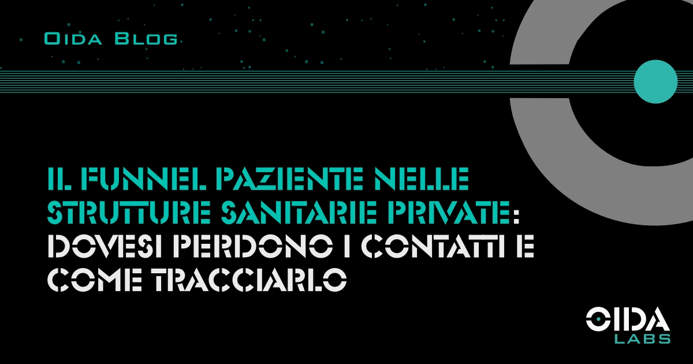

← Tutti gli articoliIl funnel paziente nelle strutture sanitarie private: dove si perdono i contatti e come tracciarlo
Le strutture sanitarie private perdono una quota consistente di potenziali pazienti tra il primo contatto e la prenotazione. Identificare dove avviene la perdita è il primo passo per ridurla.
Una struttura sanitaria privata che investe in pubblicità online, in SEO o in campagne Meta Ads misura quasi sempre il costo per lead: quanto costa generare un contatto. Poche strutture misurano il costo per paziente acquisito, ovvero quanto costa trasformare quel contatto in un paziente che ha effettivamente prenotato, si è presentato alla visita e ha potenzialmente costruito una relazione con la struttura.
La differenza tra questi due numeri — il CPL e il CAC reale — è la misura di ciò che si perde nel funnel. E in sanità privata, quello che si perde nel funnel è sistematicamente sottostimato.
- Perché il funnel paziente è diverso
- I quattro punti di perdita più comuni
- Come tracciare il funnel: cosa misurare e come
- Il costo della non-misurazione
- Dall’analisi alla priorità di intervento
- FAQ
Perché il funnel paziente è diverso da un funnel commerciale standard
Le specificità che cambiano la dinamica.
Il paziente che decide di rivolgersi a una struttura sanitaria privata non segue la logica di acquisto di un prodotto o di un servizio generico. Il processo decisionale è più lungo, più influenzato dalla componente relazionale e fiduciaria, e più sensibile alle frizioni operative che in altri contesti verrebbero considerate minori.
Un tempo di attesa di due minuti al telefono non scoraggia chi sta prenotando un viaggio. Può scoraggiare chi sta cercando un primo appuntamento per un problema di salute che genera ansia. Un form di prenotazione lungo cinque passaggi non è un problema per chi acquista online con regolarità. Può essere un ostacolo per un paziente che non usa frequentemente i canali digitali e che, di fronte alla complessità, torna a cercare un’alternativa.
Il funnel paziente, nei termini in cui è utile analizzarlo per una struttura privata, comprende quattro fasi distinte: visibilità (il paziente trova la struttura), contatto (il paziente invia un messaggio, compila un form, chiama), prenotazione (il contatto si trasforma in appuntamento confermato) e presentazione (il paziente si presenta). A questo si aggiunge una quinta fase rilevante per la sostenibilità: ritorno (il paziente torna per una visita successiva).
Ogni transizione tra una fase e la successiva comporta una perdita. La domanda non è se ci siano perdite, ma dove sono concentrate e di che entità sono.
I quattro punti di perdita più comuni
1. Tra visibilità e contatto: il problema della proposta non chiara
La prima perdita avviene quando un potenziale paziente trova la struttura, visita la pagina, e non prende contatto. Le cause sono multiple: la pagina non risponde alla domanda specifica del paziente, l’invito all’azione non è abbastanza chiaro, il percorso verso la prenotazione richiede troppi passaggi.
Dati interni OIDA Labs su strutture monitorate tra il 2023 e il 2025 mostrano che il tasso di conversione medio da visita alla pagina di una specialità a contatto effettivo è compreso tra il 2,8% e il 6,3%, con variazioni significative in funzione della chiarezza della proposta, della velocità di caricamento della pagina e della presenza di elementi di fiducia (recensioni, certificazioni, profilo del professionista).
2. Tra contatto e prenotazione: il problema del tempo di risposta
La seconda perdita è spesso la più costosa in termini assoluti. Il paziente ha fatto il passo difficile — contattare la struttura — e non ha ricevuto risposta nei tempi che considerava accettabili.
Il tema del tempo di risposta e dell’automazione della prima interazione è approfondito nell’articolo su chatbot e automazione della prima risposta. Qui è rilevante sottolineare che questa perdita è misurabile: il numero di contatti ricevuti meno il numero di prenotazioni confermate, diviso per il numero di contatti, dà un tasso di conversione contatto-prenotazione che in strutture non ottimizzate può essere inferiore al 40%.
3. Tra prenotazione e presentazione: il problema del no-show
Il no-show — il paziente che ha prenotato e non si presenta senza disdire — è un costo operativo e di marketing che poche strutture tracciano sistematicamente. La percentuale di no-show varia per specialità: in psicologia può superare il 20%, in fisioterapia e in alcune specialità chirurgiche è inferiore. Ma ogni no-show è un appuntamento non generato, un professionista con un’ora non valorizzata e un costo di acquisizione del lead che non ha prodotto ricavo.
I sistemi di promemoria automatici (SMS, email, WhatsApp) riducono il no-show in modo documentato. La riduzione media rilevabile con un sistema di promemoria a 24-48 ore dall’appuntamento è tra il 20% e il 35% del tasso di no-show precedente all’implementazione.
4. Tra presentazione e ritorno: il problema della discontinuità
La quarta perdita è la meno tracciata. Il paziente si è presentato alla visita, ha avuto un’esperienza positiva, ma non è tornato. Non ha prenotato una visita di controllo, non è stato intercettato per altri servizi compatibili con il suo profilo, non ha ricevuto comunicazioni che lo mantenessero in relazione con la struttura.
Il lifetime value di un paziente che torna più volte è significativamente superiore al valore di una singola visita. La struttura che non costruisce un sistema di follow-up post-visita, anche semplice, sta pagando ogni volta un costo di acquisizione che potrebbe non sostenere se si occupasse della fidelizzazione di chi è già cliente.
Come tracciare il funnel: cosa misurare e come
Le metriche essenziali
Per tracciare il funnel paziente non serve un sistema complesso. Serve sistematicità nella raccolta di quattro numeri fondamentali: contatti ricevuti per canale (telefono, form, WhatsApp, email), prenotazioni confermate, presentazioni effettive e pazienti che tornano almeno una seconda volta nell’arco di 12 mesi.
La granularità per canale è essenziale: un tasso di conversione aggregato nasconde le differenze tra canali che si comportano in modo molto diverso. Una campagna Google Ads può generare lead con tasso di conversione a prenotazione del 60%, mentre il form del sito può convertire al 20%. Senza granularità per canale, non è possibile allocare il budget in modo informato.
Il ruolo del CRM
Un CRM configurato per le specificità della sanità privata è lo strumento che rende questo tracciamento possibile senza dipendere da fogli Excel aggiornati manualmente. La struttura del CRM, i campi che traccia, i workflow che automatizza e i report che produce, determinano la qualità dei dati disponibili per l’analisi.
Il costo della non-misurazione
Cosa succede senza dati di funnel.
Una struttura che non traccia il funnel paziente non può sapere dove si concentrano le perdite. Non può sapere se il problema è nella generazione di traffico, nella gestione dei contatti, nel processo di prenotazione o nella fidelizzazione post-visita. Questo significa che quando decide di investire in marketing, investe in modo non informato: aggiunge spesa pubblicitaria su un funnel bucato, e il risultato è più lead che si perdono nelle stesse fasi di sempre.
Il paradosso è che le strutture che non misurano tendono a concludere che “il marketing non funziona” quando il problema non è il marketing, ma il processo a valle. Un lead che arriva e non converte non è un problema di acquisizione: è un problema di conversione. Distinguere le due cose richiede dati.
Dall’analisi alla priorità di intervento
Come stabilire su quale fase concentrarsi.
Una volta che i dati di funnel sono disponibili, la priorità di intervento segue una logica di ritorno sull’investimento: si interviene prima sulla fase in cui la perdita è percentualmente più alta e dove l’intervento ha il costo operativo più basso.
- Se il tasso di conversione da contatto a prenotazione è inferiore al 50%, il problema è nella gestione dei lead e nell’automazione della prima risposta
- Se la conversione da contatto a prenotazione è buona ma il no-show supera il 15%, il problema è nel processo di conferma e nei promemoria automatici
- Se l’acquisizione e la presentazione funzionano ma il ritorno è basso, il problema è nella fidelizzazione post-visita
Le strutture che costruiscono questo tipo di analisi in modo continuativo, non come esercizio una tantum, sviluppano nel tempo una capacità di diagnosi del proprio funnel che è di per sé un vantaggio competitivo: sanno dove guardare quando i risultati cambiano.
Sintesi
Il funnel paziente è il luogo in cui si decide la reale efficacia del marketing sanitario. Le strutture che lo tracciano sanno dove stanno perdendo contatti e possono intervenire. Quelle che non lo tracciano continuano a investire in marketing senza capire perché i risultati non corrispondono alle aspettative.
FAQ
Qual è un tasso di conversione da contatto a prenotazione considerato accettabile per una struttura sanitaria privata?
Strutture che gestiscono i lead con processo sistematico raggiungono tassi di conversione contatto-prenotazione tra il 55% e il 70% per i canali diretti (telefono, WhatsApp). Per i canali digitali indiretti (form sul sito, landing page di campagne), il range accettabile si abbassa tra il 30% e il 50%, in funzione della qualità del traffico generato. Sotto il 30% su qualsiasi canale, c’è una perdita significativa che merita analisi.
Come si attribuisce il canale di acquisizione quando un paziente usa più touchpoint prima di prenotare?
L’attribuzione multicanale in sanità privata è complessa perché il percorso del paziente raramente è lineare. L’attribuzione last-click attribuisce tutto all’ultimo touchpoint e non tiene conto della catena. Una stima più accurata richiede di chiedere sistematicamente al paziente come ha conosciuto la struttura durante il primo contatto, e di registrare la risposta nel CRM.
È necessario un software dedicato per tracciare il funnel paziente, o è sufficiente un foglio Excel?
Un foglio Excel è sufficiente per iniziare a raccogliere dati. Diventa un limite non appena il volume di contatti supera quello gestibile manualmente. Per strutture con più di 50-70 contatti al mese provenienti da canali digitali, il passaggio a un CRM strutturato è giustificato rapidamente.
Fonti: Dati interni OIDA Labs (analisi funnel paziente e tasso di conversione su strutture monitorate 2023-2025); InsideSales.com / MIT Sloan Lead Response Management Definitive Guide (2023); CERGAS Bocconi Rapporto OASI 2024; BrightLocal Healthcare Consumer Review Survey 2024.